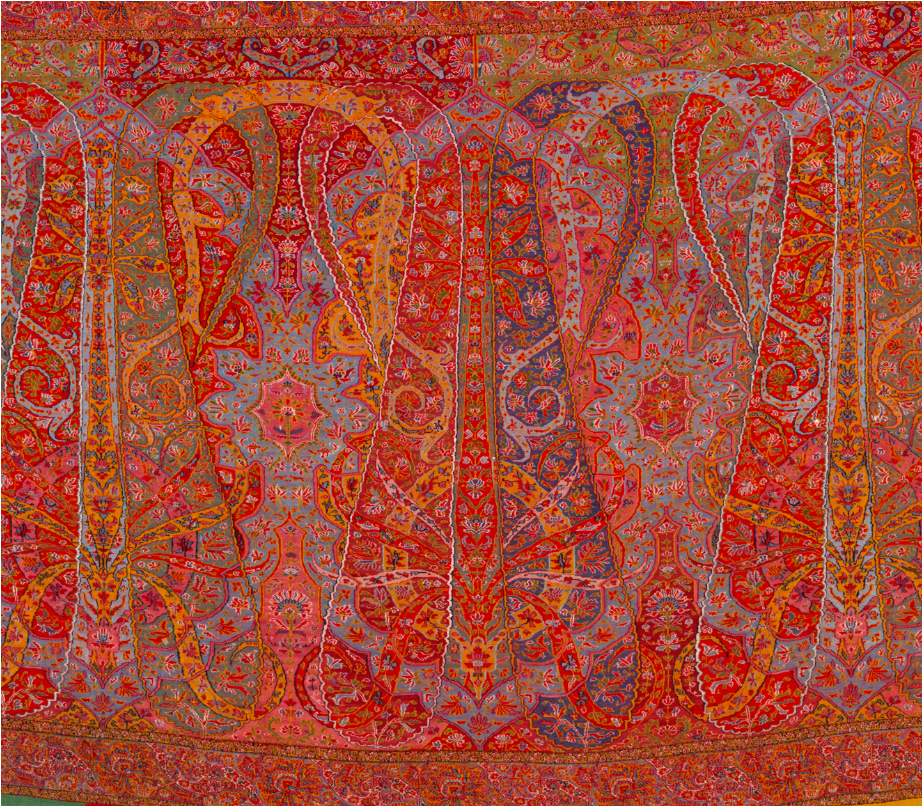
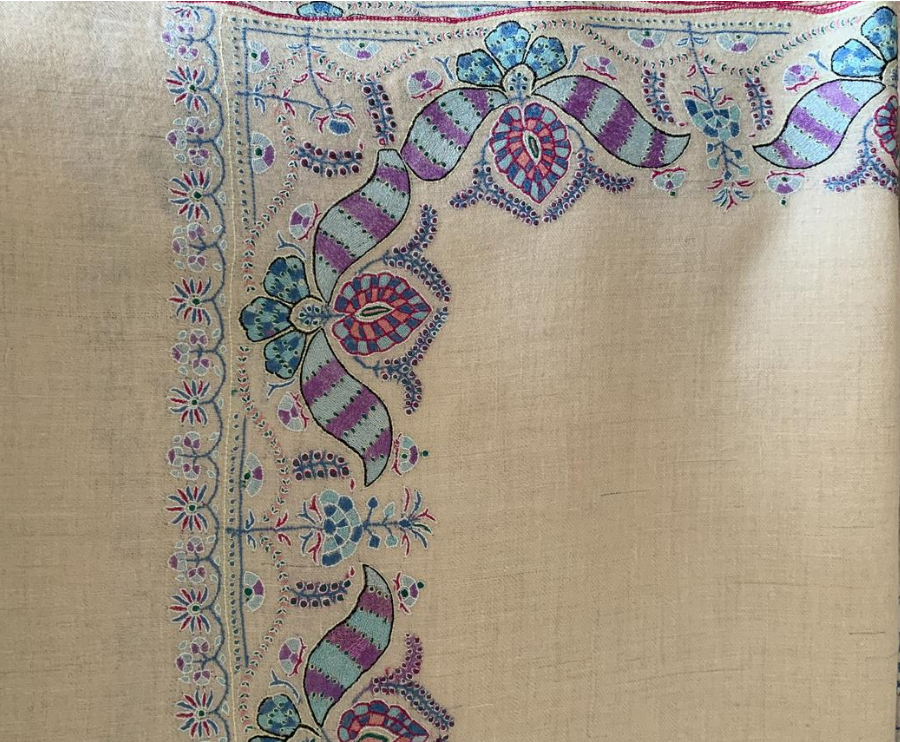
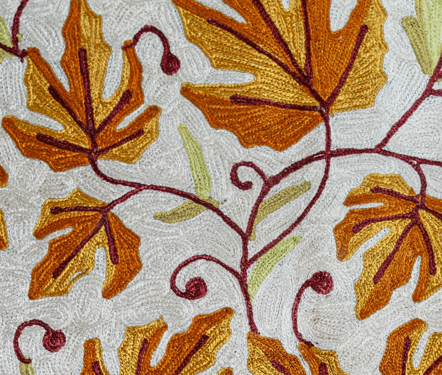

Explore


Women traditionally card and hand‑spin Pashmina on tools like the yinder and wooden spindles, often taking over twenty hours to spin just 50 grams of fine yarn. This human variation in twist and thickness is exactly what gives hand‑spun Pashmina its subtle movement and warmth, unlike uniform mill yarns.
Warp threads are manually counted and tensioned on pit looms and wooden looms in Kashmir before weaving begins. Weavers build the cloth pick by pick using plain twill, herringbone, pointed twill or basket weaves—structures that quietly shape drape and strength beneath any embroidery.
Sozni embroidery introduces a whole garden of motifs—curved botehs, chinar leaves, tiny bootis and dense floral jaals—onto Pashmina bases. Designs are first traced or block‑printed, then filled with extremely fine stitches so closely packed that good Sozni work can look almost the same on both sides.
A curved teardrop with a bent tip—the core motif of Kashmir shawls that Europe later named "paisley."

A five‑ or multi‑lobed leaf based on the Chinar tree (Platanus orientalis), one of Kashmir's most recognisable trees.

Bootis are small, repeated motifs—often flowers, leaves or tiny botehs—spread rhythmically across the field of a shawl.
